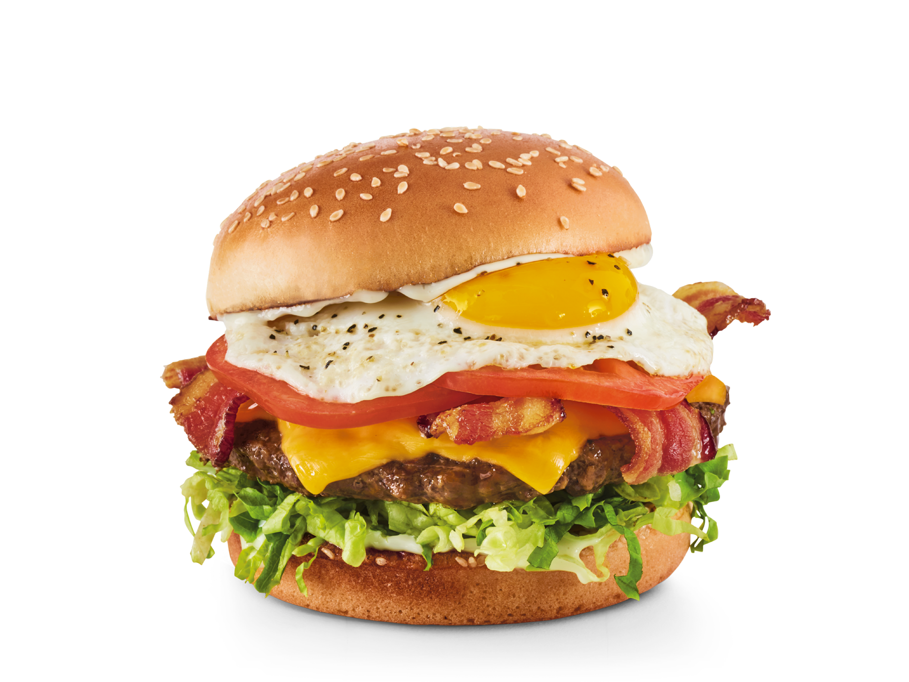

Royal Red Robin Burger
The Royal Red Robin burger is a juicy, flame-grilled beef patty topped with melted cheese, fresh lettuce, ripe tomato, pickles, and Red Robin’s signature mayo, all served on a toasted sesame seed bun. Customize it with a variety of toppings and sauces for the ultimate burger experience!
Ingredients
- ½ cup mayonnaise
- 2 garlic cloves, minced
- 1 teaspoon lemon juice
- ½ teaspoon grated lemon zest
CHEESEBURGERS:
- 2 pounds lean ground beef (90% lean)
- 1 tablespoon stone-ground mustard
- 1 tablespoon olive oil
- 1 teaspoon dried thyme
- ½ teaspoon salt
- ½ teaspoon pepper
- 8 slices Gruyere or aged Swiss cheese
- 8 mini pretzel buns, split
FRIED EGGS:
- 2 tablespoons butter
- 8 large eggs
TOPPINGS:
- Fresh arugula
- 2 medium tomatoes, sliced
- Additional stone-ground mustard, optional
Instructions
- Whisk mayonnaise, garlic, lemon juice and lemon zest until blended. Refrigerate.
- For burgers, combine the next six ingredients, mixing lightly but thoroughly (do not overmix). Shape into eight patties. Grill, covered, over medium direct heat until a thermometer reads 160°F, 5-7 minutes on each side. Top with cheese; grill, covered, until cheese is melted, 1-2 minutes longer. Place burgers on bun bottoms. Keep warm.
- Melt 1 tablespoon butter over medium heat in each of two large skillets (on grill or stovetop). Break eggs, one at a time, into a custard cup or saucer, then gently slide into pans. Immediately reduce heat to low. To prepare eggs sunny-side up, cover pan and cook until yolks thicken but are not hard. To make basted eggs, spoon butter in pan over eggs while cooking. For over-easy, carefully turn eggs to cook both sides but do not cover pan.
- To serve, spread mayonnaise mixture over bun tops. Add arugula, tomatoes and, if desired, additional mustard to burgers. Top with fried eggs. Replace bun tops.